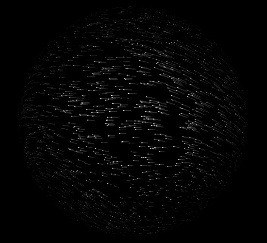
Above: Noise Scale 0.12
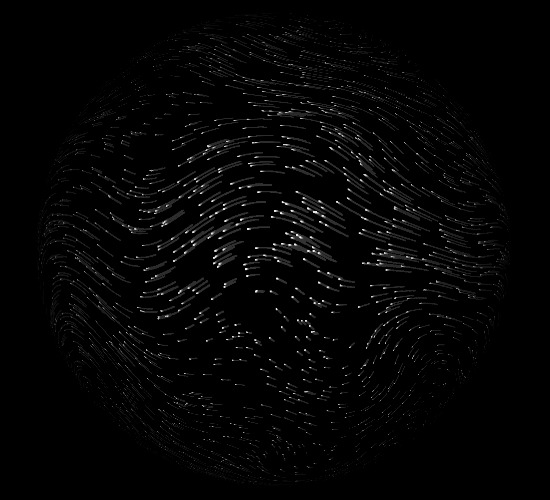
Above: Noise Scale 0.25
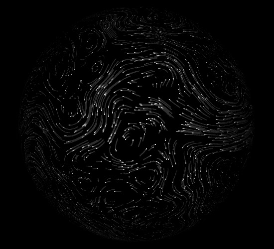
Above: Noise Scale 0.50
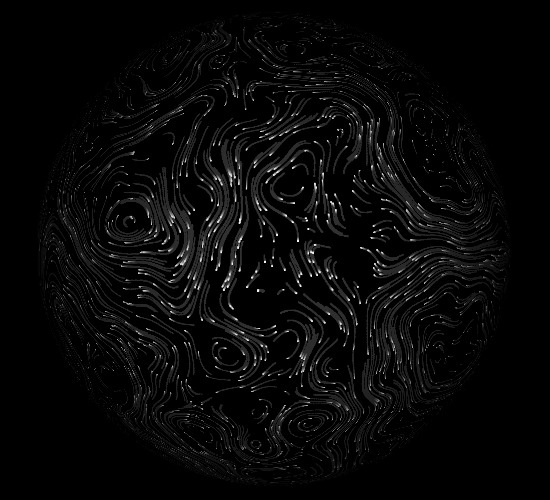
Above: Noise Scale 0.75
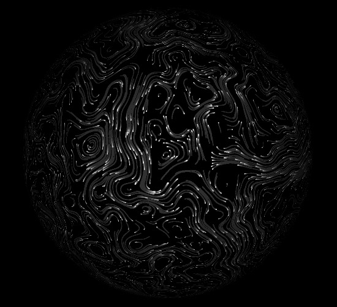
Above: Noise Scale 1.00
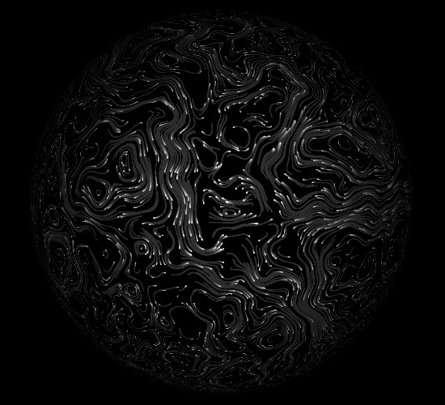
Above: Noise Scale 1.25
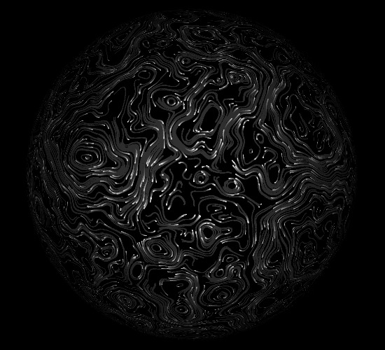
Above: Noise Scale 1.50
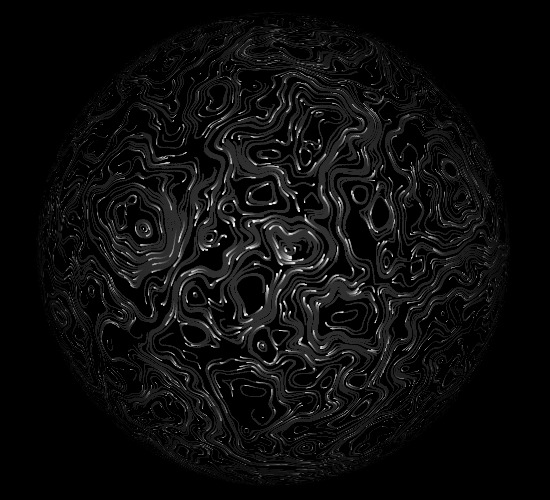
Above: Noise Scale 1.75
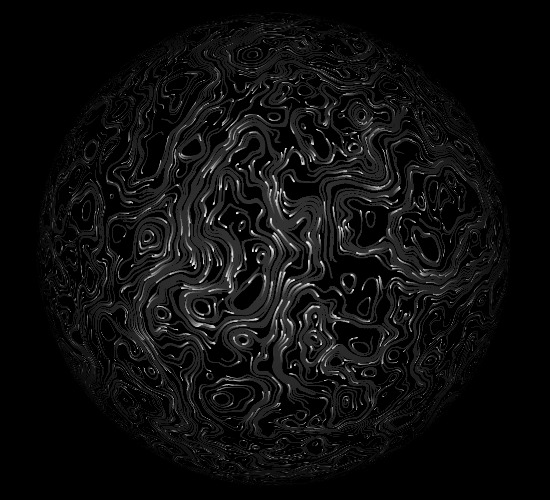
Above: Noise Scale 2.00
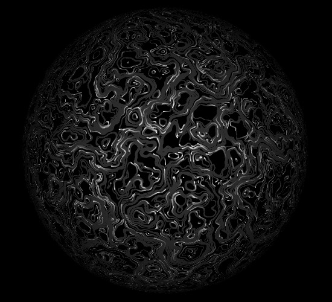
Above: Noise Scale 3.00
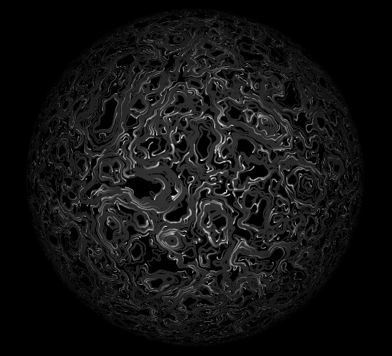
Above: Noise Scale 4.00
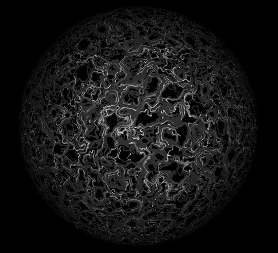
Above: Noise Scale 6.00
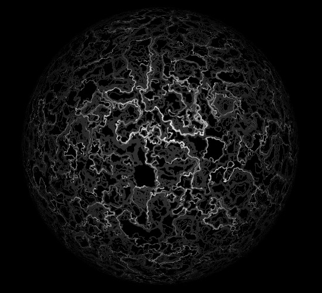
Above: Noise Scale 10.00
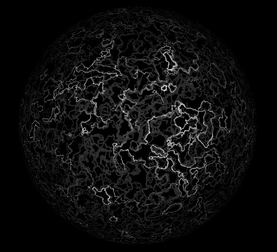
Above: Noise Scale 15.00
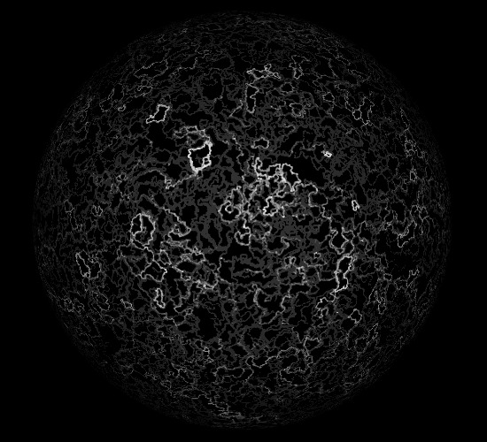
Above: Noise Scale 20.00